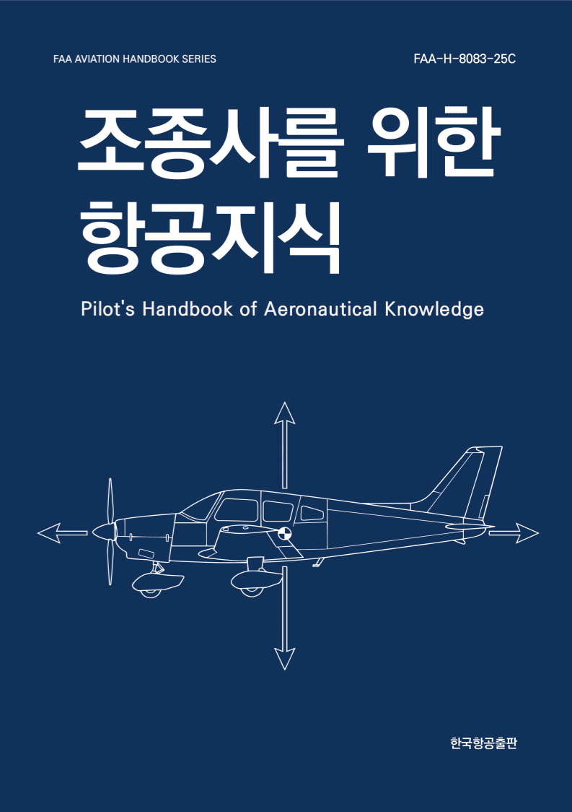
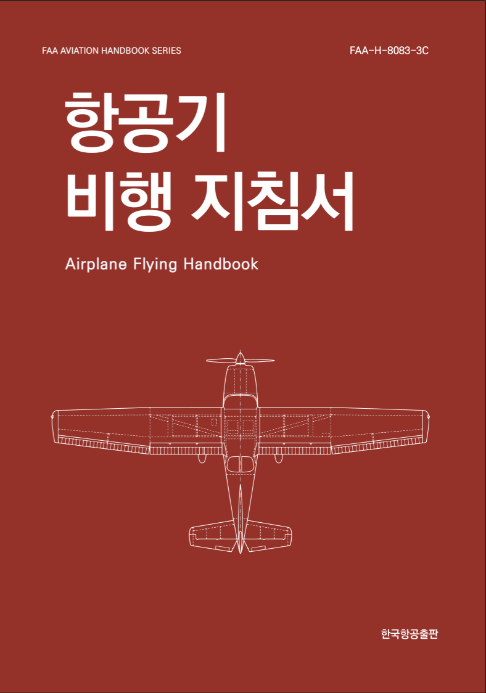
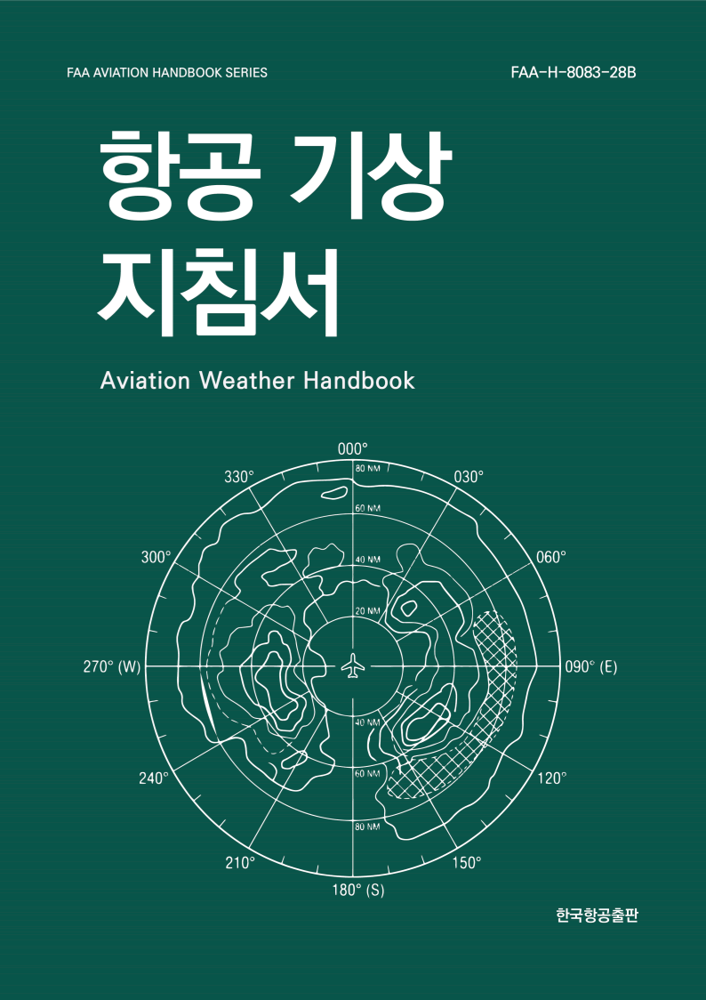

Pilot’s Handbook of Aeronautical Knowledge (PHAK)
원서 FAA-H-8083-25C
비행 원리, 항공기 구조와 계통, 비행 계기, 항공 기상, 항법, 항공기 성능 등 조종사가 알아야 할 항공 지식 전반을 다룹니다.
도서 정보
ISBN: 979-11-221118-1-1 (93550)
저자: 미국 연방항공청
역자: 김재성
가격: 85,000원

Airplane Flying Handbook (AFH)
원서 FAA-H-8083-3C
지상 운영과 기본 비행 기동부터 이착륙, 성능 기동, 비상 절차까지 비행기를 조종하는 기술을 다룹니다.
도서 정보
ISBN: 979-11-221118-2-8 (93550)
저자: 미국 연방항공청
역자: 김재성
가격: 85,000원

Aviation Weather Handbook (AWH)
원서 FAA-H-8083-28B
대기의 성질과 기압, 바람, 구름, 안정도 같은 기상 원리, 그리고 뇌우, 난류, 착빙 같은 위험 기상을 다룹니다.
도서 정보
ISBN: 979-11-221118-3-5 (93550)
저자: 미국 연방항공청
역자: 김재성
가격: 55,000원